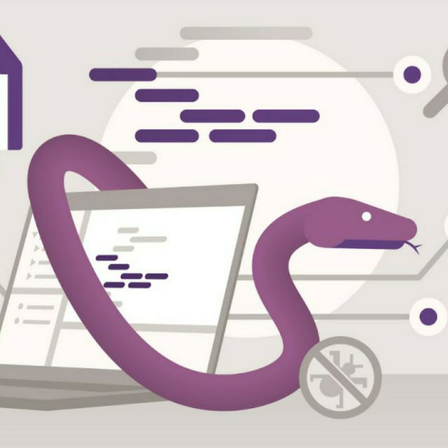

Python

Из всего разнообразия существующих увлечений, программировать мне нравится больше всего. Свой самый первый опыт в программировании я получил создавая программки на языке JavaScript. Но настоящая увлечённость в программировании наступила с языком Python.
С языком программирования Python я познакомился на курсе «Python веб-разработчик» от Skillfactory. Там я научился работать с этим языком и использовать его при написании настоящих проектов.
В дальнейшем я использовал Python в решении своих повседневных задач, например написал словарик для изучения иностранных слов, написал программу по работе с большим кол-вом файлов, по их систематизации и приведению их к общему виду.